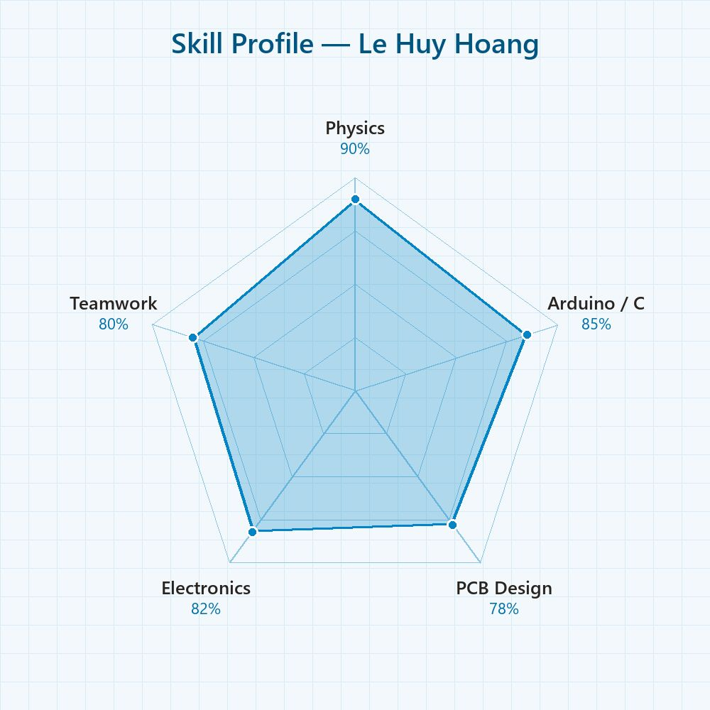
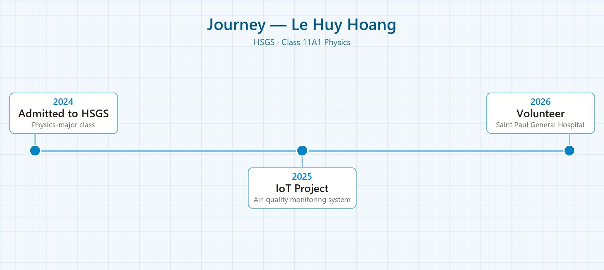

Giới thiệu
Mình là Lê Huy Hoàng, học sinh lớp 11A1 chuyên Vật lý, trường THPT Chuyên Khoa học Tự nhiên (HSGS), ĐHQG Hà Nội. Mình yêu thích Vật lý, điện tử và các hệ thống nhúng: mình đã tự thiết kế và chế tạo hệ thống quan trắc chất lượng không khí trên ESP32 với ba cảm biến khí MQ2, MQ3, MQ7, từ lập trình firmware đến thiết kế mạch in trên Altium Designer. Mình cũng tích cực tham gia các hoạt động thiện nguyện, trong đó có chương trình tặng quà cho bệnh nhi có hoàn cảnh khó khăn tại Bệnh viện Đa khoa Xanh Pôn.
“Không khí sạch là thứ ai cũng cần nhưng ít ai đo được — nên mình chế tạo máy đo.”
Kỹ năng

Sở thích & Quan tâm
Định hướng tương lai
Mình muốn theo đuổi ngành Kỹ thuật Vật lý hoặc Kỹ thuật Điện tử, phát triển tiếp các thiết bị quan trắc môi trường chi phí thấp cho trường học và hộ gia đình. Mục tiêu gần của mình là hoàn thiện phiên bản 2 của máy đo không khí với kết nối WiFi và bản đồ dữ liệu theo thời gian thực.
Hành trình
Trúng tuyển lớp chuyên Vật lý, THPT Chuyên Khoa học Tự nhiên (HSGS) – ĐHQG Hà Nội.
Hoàn thành sản phẩm cá nhân “Hệ thống đo chất lượng không khí” với cảm biến MQ-135, DHT22 và màn OLED; tự thiết kế PCB trên Altium.
Tham gia chương trình thiện nguyện tặng quà bệnh nhi tại Bệnh viện Đa khoa Xanh Pôn; nhận Thư cảm ơn của Bệnh viện.

Nghiên cứu khoa học
Thành tích & Giải thưởng
Chứng chỉ chuẩn hóa
Hoạt động ngoại khóa & Dự án
Sản phẩm cá nhân: Hệ thống quan trắc chất lượng không khí IoT (ESP32)
Tự thiết kế và chế tạo hệ thống đo chất lượng không khí trên vi điều khiển ESP32 tích hợp ba cảm biến khí, hiển thị tại chỗ trên màn OLED và gửi dữ liệu lên đám mây để theo dõi từ xa. Sản phẩm hoàn chỉnh từ firmware, thiết kế mạch in trên Altium Designer đến báo cáo kỹ thuật, poster và bộ câu hỏi phản biện.
- Ba cảm biến khí: MQ2 (khói/gas cháy nổ), MQ3 (hơi cồn/VOC) và MQ7 (khí CO) nối ESP32 qua các kênh ADC 12-bit (GPIO34/35…).
- Quy đổi giá trị ADC sang nồng độ ppm bằng hệ số hiệu chuẩn; đánh giá không khí theo 3 mức Tốt / Trung bình / Kém (ví dụ CO dưới 50 ppm là Tốt, trên 200 ppm là Kém).
- Hiển thị trên màn OLED SSD1306 (I2C) và gửi dữ liệu lên nền tảng ThingSpeak qua WiFi mỗi 15 giây.
- Kết quả thử nghiệm: sai số trong khoảng ±5% so với thiết bị chuẩn, thời gian đáp ứng 10–60 giây, tỷ lệ gửi dữ liệu thành công trên 95%, tự kết nối lại khi mất WiFi.


Thiện nguyện tại Bệnh viện Đa khoa Xanh Pôn (2026)
Tham gia chương trình tặng quà, động viên tinh thần các bệnh nhi có hoàn cảnh khó khăn tại Bệnh viện Đa khoa Xanh Pôn, Hà Nội. Được Bệnh viện gửi Thư cảm ơn ghi nhận đóng góp.


{kind=link}
{kind=link}
{kind=link}